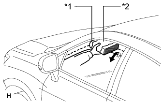

СИСТЕМА УПРАВЛЕНИЯ ЭЛЕКТРИЧЕСКИМИ СТЕКЛОПОДЪЕМНИКАМИ > ПРОВЕРКА РАБОТЫ СИСТЕМЫ |
| ПРОВЕРЬТЕ ВЫКЛЮЧАТЕЛЬ БЛОКИРОВКИ СТЕКЛОПОДЪЕМНИКОВ |
Когда нажат выключатель блокировки электрических стеклоподъемников главного переключателя сети мультиплексной связи, проверьте, что выключены индикаторы работы всех переключателей стеклоподъемников, кроме тех, которые установлены на главном переключателе сети мультиплексной связи, а также что стеклоподъемники двери переднего пассажира и задних дверей* отключены.
При повторном нажатии выключателя блокировки электрических стеклоподъемников проверьте, что индикаторы работы всех переключателей электрических стеклоподъемников светятся, а также что стеклоподъемники двери переднего пассажира и задних дверей* работают нормально.
| ПРОВЕРЬТЕ ФУНКЦИЮ РУЧНОГО ПОДЪЕМА/ОПУСКАНИЯ |
Убедитесь, что стеклоподъемник окна со стороны водителя работает следующим образом:
| Условие | Главный выключатель | Управление выключателем | Электрические стеклоподъемники |
| Замок зажигания в положении ON (ВКЛ) | Со стороны водителя | Наполовину поднят вверх | Подъем (окно закрывается) |
| Наполовину нажат вниз | Опускание (окно открывается) |
Убедитесь, что электрические стеклоподъемники передней двери со стороны пассажира и задних дверей* работают следующим образом:
| Условие | Переключатель стеклоподъемника | Управление переключателем | Электрические стеклоподъемники |
| Со стороны переднего пассажира | Наполовину поднят вверх | Подъем (окно закрывается) |
| Наполовину нажат вниз | Опускание (окно открывается) | ||
| Левая задняя дверь* | Наполовину поднят вверх | Подъем (окно закрывается) | |
| Наполовину нажат вниз | Опускание (окно открывается) | ||
| Правая задняя дверь* | Наполовину поднят вверх | Подъем (окно закрывается) | |
| Наполовину нажат вниз | Опускание (окно открывается) |
| ПРОВЕРЬТЕ ФУНКЦИЮ АВТОМАТИЧЕСКОГО ПОДЪЕМА/ОПУСКАНИЯ |
Убедитесь, что стеклоподъемник окна со стороны водителя работает следующим образом:
| Условие | Главный выключатель | Управление выключателем | Электрические стеклоподъемники |
| Замок зажигания в положении ON (ВКЛ) | Со стороны водителя | Поднят (функция одного касания) | Автоматический подъем (окно закрывается) |
| Нажат (функция одного касания) | Автоматическое опускание (окно открывается) |
Убедитесь, что электрические стеклоподъемники передней двери со стороны пассажира и задних дверей* работают следующим образом:
| Условие | Переключатель стеклоподъемника | Управление переключателем | Электрические стеклоподъемники |
| Со стороны переднего пассажира | Поднят (функция одного касания) | Автоматический подъем (окно закрывается) |
| Нажат (функция одного касания) | Автоматическое опускание (окно открывается) | ||
| Левая задняя дверь* | Поднят (функция одного касания) | Автоматический подъем (окно закрывается) | |
| Нажат (функция одного касания) | Автоматическое опускание (окно открывается) | ||
| Правая задняя дверь* | Поднят (функция одного касания) | Автоматический подъем (окно закрывается) | |
| Нажат (функция одного касания) | Автоматическое опускание (окно открывается) |
| ПРОВЕРЬТЕ ФУНКЦИЮ ДИСТАНЦИОННОГО РУЧНОГО ПОДЪЕМА/ОПУСКАНИЯ |
Убедитесь, что электрические стеклоподъемники передней двери со стороны пассажира и задних дверей* работают следующим образом:
| Условие | Главный выключатель | Управление выключателем | Электрические стеклоподъемники |
| Замок зажигания в положении ON (ВКЛ) | Со стороны переднего пассажира | Наполовину поднят вверх | Подъем (окно закрывается) |
| Наполовину нажат вниз | Опускание (окно открывается) | ||
| Левая задняя дверь* | Наполовину поднят вверх | Подъем (окно закрывается) | |
| Наполовину нажат вниз | Опускание (окно открывается) | ||
| Правая задняя дверь* | Наполовину поднят вверх | Подъем (окно закрывается) | |
| Наполовину нажат вниз | Опускание (окно открывается) |
| ПРОВЕРЬТЕ ФУНКЦИЮ ДИСТАНЦИОННОГО АВТОМАТИЧЕСКОГО ПОДЪЕМА/ОПУСКАНИЯ |
Убедитесь, что электрические стеклоподъемники передней двери со стороны пассажира и задних дверей* работают следующим образом:
| Условие | Главный выключатель | Управление выключателем | Электрические стеклоподъемники |
| Замок зажигания в положении ON (ВКЛ) | Со стороны переднего пассажира | Поднят (функция одного касания) | Автоматический подъем (окно закрывается) |
| Нажат (функция одного касания) | Автоматическое опускание (окно открывается) | ||
| Левая задняя дверь* | Поднят (функция одного касания) | Автоматический подъем (окно закрывается) | |
| Нажат (функция одного касания) | Автоматическое опускание (окно открывается) | ||
| Правая задняя дверь* | Поднят (функция одного касания) | Автоматический подъем (окно закрывается) | |
| Нажат (функция одного касания) | Автоматическое опускание (окно открывается) |
| ПРОВЕРЬТЕ ФУНКЦИЮ УПРАВЛЕНИЯ СТЕКЛОПОДЪЕМНИКАМИ ПОСЛЕ ВЫКЛЮЧЕНИЯ ЗАЖИГАНИЯ |
Убедитесь в том, что после выключения зажигания остается возможность управлять всеми электрическими стеклоподъемниками с помощью главного переключателя сети мультиплексной связи и переключателей электрических стеклоподъемников (для двери переднего пассажира, а также левой и правой задних дверей*).
Убедитесь, что функция управления при выключении зажигания не работает после открывания двери со стороны водителя или переднего пассажира.
Убедитесь в том, что по истечении примерно 45 секунд с момента выключения зажигания управление всеми электрическими стеклоподъемниками блокируется.
| ПРОВЕРЬТЕ ФУНКЦИЮ ОТКРЫВАНИЯ И ЗАКРЫВАНИЯ С ПОМОЩЬЮ КЛЮЧА |
Убедитесь, что все электрические стеклоподъемники работают следующим образом:
| Условие | Управление цилиндром дверного замка | Электрические стеклоподъемники |
| В салоне автомобиля ключ отсутствует, и все двери закрыты | Удерживается в позиции блокировки более 2 с | Подъем (окно закрывается) |
| В салоне автомобиля ключ отсутствует, и все двери закрыты | Возвращен в нейтральное положение | Остановка |
| В салоне автомобиля ключ отсутствует, и все двери закрыты | Удерживается в позиции разблокировки более 2 с | Опускание (окно открывается) |
| В салоне автомобиля ключ отсутствует, и все двери закрыты | Возвращен в нейтральное положение | Остановка |
| ПРОВЕРЬТЕ ФУНКЦИЮ ОТКРЫВАНИЯ И ЗАКРЫВАНИЯ С ПОМОЩЬЮ ПЕРЕДАТЧИКА |
Убедитесь, что все электрические стеклоподъемники работают следующим образом при управлении с передатчика:
| Условие | Управление с передатчика | Электрические стеклоподъемники |
| В салоне автомобиля ключ отсутствует, и все двери закрыты и заблокированы. | Выключатель разблокировки нажат более 3,0 с | Опускание (окно открывается) |
| В салоне автомобиля ключ отсутствует, и все двери закрыты и заблокированы. | Отпущен выключатель разблокировки | Остановлен |
| В салоне автомобиля ключ отсутствует, и все двери закрыты и заблокированы. | Выключатель LOCK (ЗАБЛОКИР) нажат более 3,0 с | Подъем (окно закрывается) |
| В салоне автомобиля ключ отсутствует, и все двери закрыты и заблокированы. | Выключатель LOCK (ЗАБЛОКИР) отпущен | Останавливается |
| ПРОВЕРЬТЕ ФУНКЦИЮ ТРАВМОБЕЗОПАСНОСТИ |
Проверьте основные функции.
Полностью откройте окно.
|  |
Расположите обмотанную куском ткани толстую книгу рядом с верхним краем окна.
| *1 | Толстая книга |
| *2 | Ткань |
Приведите в действие функцию автоматического или ручного подъема и убедитесь, что когда книга зажимается между стеклом и дверной рамой, стекло начинает опускаться, останавливаясь, когда размер проема оказывается равным примерно 200 мм (7,87 дюйма).
В процессе опускания электрического стеклоподъемника убедитесь, что стекло не поднимается даже с помощью переключателя электрических стеклоподъемников.
| ПРОВЕРЬТЕ СВЕТОДИОДНУЮ ПОДСВЕТКУ ПЕРЕКЛЮЧАТЕЛЯ ЭЛЕКТРИЧЕСКИХ СТЕКЛОПОДЪЕМНИКОВ |
Проверьте, горит ли светодиод (на главном переключателе сети мультиплексной связи).
Убедитесь, что светодиоды на главном переключателе сети мультиплексной связи загораются при включении зажигания.
Проверьте, горит ли светодиод (на переключателе электрического стеклоподъемника двери переднего пассажира).
Убедитесь, что светодиод на переключателе электрического стеклоподъемника двери переднего пассажира загорается при включении зажигания.
Проверьте, горит ли светодиод (на переключателе электрического стеклоподъемника левой и правой задней двери*).
Убедитесь, что светодиоды на каждом переключателе электрического стеклоподъемника (левой и правой задней двери*) загораются при включении зажигания.